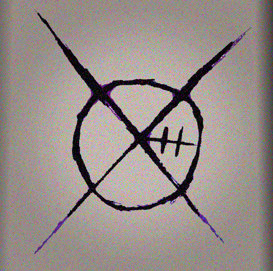

GHOX es un ser misterioso del que se sabe muy poco. Se cree que está en Argentina en 2025 y que podría revelarse completamente entre 2027 o 2028. Utiliza una máscara y su presencia está rodeada de misterio. Su nombre, "GHOX", aún no tiene una explicación clara.
Hemos recibido un símbolo o logo que representa a GHOX. Esta imagen fue proporcionada por una persona cercana a él, quien aseguró que GHOX no tiene problema en revelar su símbolo.
Según esta persona, el símbolo contiene una "O" (el círculo), una "H" (dos líneas verticales) y también una "G" si se interpretan ciertas líneas. Aunque aún no sabemos el significado exacto de "GHOX", ahora al menos sabemos que es su nombre.